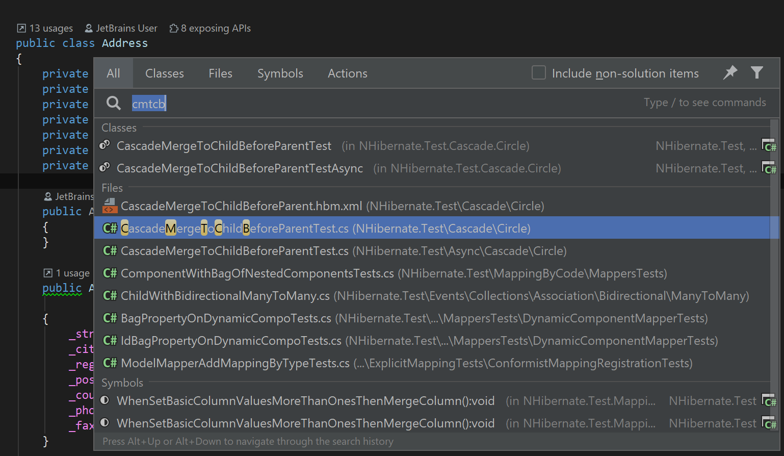
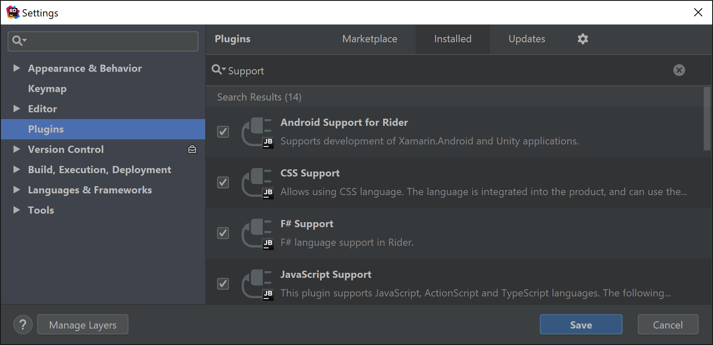
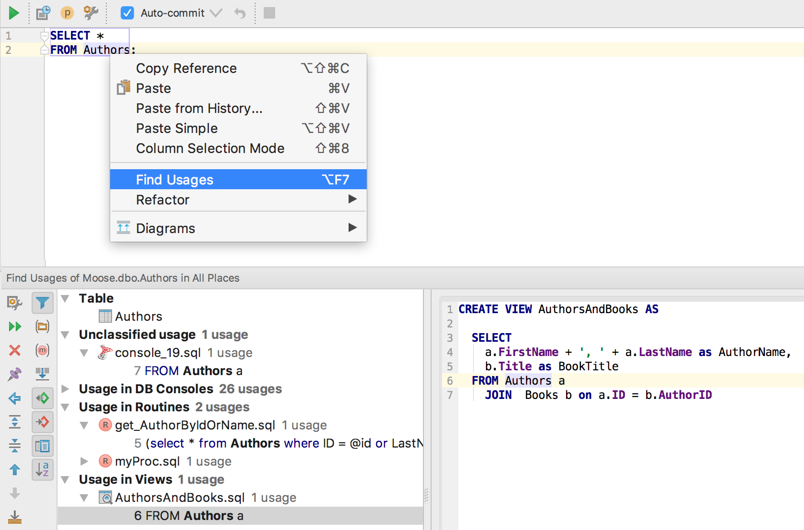
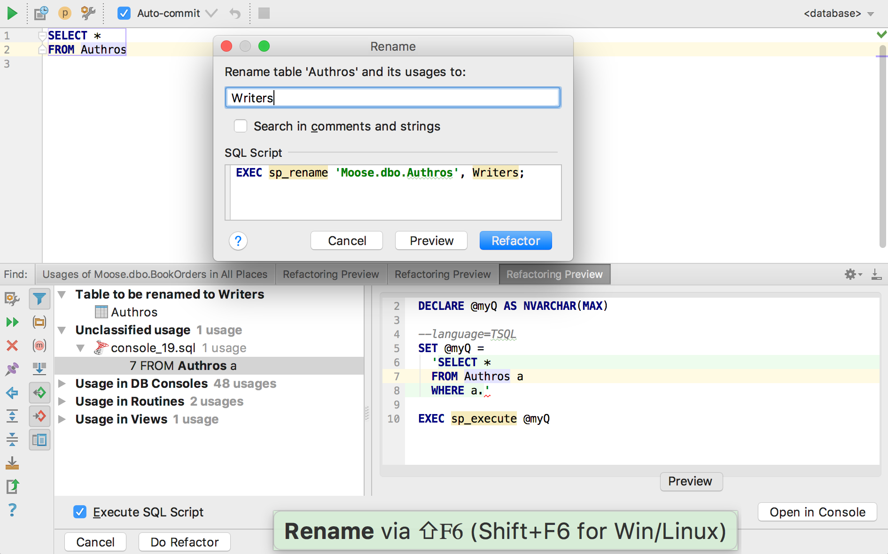
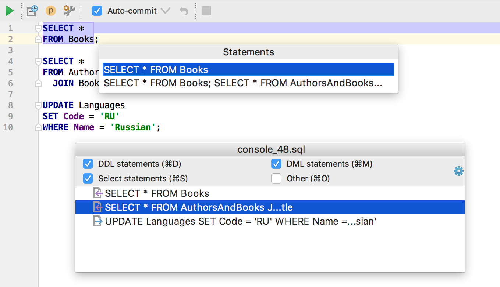
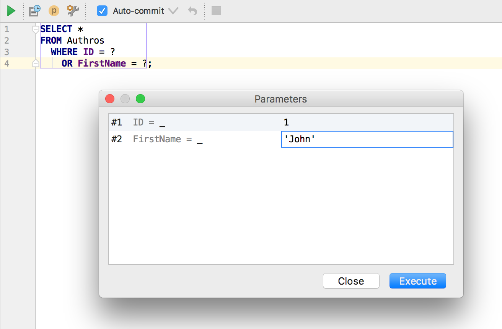

アンケートに参加して —
ライセンスを獲得してください！
Rider
高速で強力なクロスプラットフォーム.NET IDE
Windows、macOS、Linuxで.NETのコーディング
WebStorm、IntelliJ IDEA、その他のJetBrainsツールと同様のIDEでコーディングできます。

Alt+Enterでコードを修正または改善
Riderは内部的にReSharperのコード解析を使用しています。

Roslynアナライザ
さらに強力にコードの品質を向上させます。

コードの改善にかかる時間を節約
多数のクイックフィックスをファイル、プロジェクト、またはソリューションに適用できます。

Code Vision
新しい方法で、エディタ内から直接コードに関する有用な情報を確認できます。
コードを片っ端からリファクタリング
コードのRename（名前変更）・move（移動）・extract（抽出）、または階層の変更を実行できます。
プロジェクト全体のRename（名前変更）
Solution Explorerまたはパンくずリストによるナビゲーション
複数のナビゲーション機能でコードベース内を移動できます。

Search Everywhere（どこでも検索）
単一のUIからクラス・ファイル・最近編集した項目を検索できます。

任意の.NETアプリケーションをデバッグ
デバッガは .NET Framework、.NET Core、Mono、Xamarin、Unity、ASP.NET、ASP.NET Coreをサポートしています。

サードパーティのコードをデバッグ
Riderがデコンパイルするアセンブリ内で直接ステップ実行を行い、
ブレークポイントを設定できます。

スマートなステップインアクション
Riderは複数のステートメントを含む行のデバッグを簡単にします。

デバッガのMemoryビュー
アプリケーションの内部動作を確認し、デバッグ中にマネージヒープを調べることができます。

デバッガでのDockerのサポート
Dockerコンテナ内でアプリケーションをデバッグできます。

リモートデバッグ
.NET Framework、.NET Core、Monoのアプリケーションをリモートでデバッグできます。
例外のポップアップ
発生した例外に関する基本的な情報を参照し、ハイライト表示されたスタックトレースからすばやく移動できます。

ユニットテストの実行と管理
.NET Framework、.NET Core、またはMonoを対象にするNUnitまたはxUnitを使用できます。

単体テストのカバーと継続的な実行
Windowsのみ

統合されたパフォーマンスプロファイラ
Windowsのみ

IISまたはFTPへの公開
ローカルまたはリモートサーバーにASP.NET Coreウェブアプリケーションをデプロイできます。

F#プロジェクトのビルド・実行・デバッグ

データベースおよびSQLに対応
SQLスクリプトの編集と実行、SQLサーバーや各種DBMSへの接続に対応しています。

VCSの変更を管理
Git、GitHub、Subversion、Mercurial、Perforce、CVSおよびTFVCに対応しています。

集中モード
Riderをメモ帳のような外観にしながら、パワフルなIDEのように機能させることができます。

1000種類以上のプラグイン
ReSharperとIntelliJプラットフォームのプラグインをRiderでご利用いただけます。

詳細を確認して、無料30日間体験版のダウンロード
jetbrains.com/rider
クロスプラットフォーム.NET IDE
Unity C#スクリプト作成を強力に支援
2,500種類以上のインスペクション、リファクタリング、およびクイックフィックス
Unityスクリプトのコードを深く理解します。
Alt+Enterでフィックスインスペクション
高速かつ静的なコード解析により、コードの問題を検出して修正できます。

Search Everywhere（どこでも検索）
単一のUIからパワフルかつ高速な検索機能を使って、ファイルやC#のクラス、またはシンボルを見つけることができます。
豊富なコードナビゲーション
使用箇所を検索し、型メンバーに移動し、クラス階層間を遷移できます。

Unityの外部エディタとして設定
C#ファイルをダブルクリックし、Riderで開くことができます。

ワンクリックでUnityエディタをデバッグ
プレイモードに自動的に切り替えできます。

Unityプレイヤーをデバッグ
ローカルのプレイヤーまたはネットワーク上のデバイスを検出できます。
割り当てられたコンポーネントと
子階層をデバッガで表示
Unity ExplorerでUnityプロジェクトの構造を表示
アセットとパッケージを表示します。
エディタから直接Unityスクリプトを作成

Unityログビューア
ログを表示し、その中を遷移できます。

Riderから直接Unityを再生、一時停止、ステップ実行

Unityイベント関数の生成

Unityイベント関数のコード補完

クイックドキュメントとUnityヘルプへのリンク

Unity固有のCode Vision
明示的に使用されているクラス、イベント関数、およびシリアル化されたフィールドのリンク
シーンおよびアセット内のイベントハンドラの使用箇所を検索
Unityでの使用箇所を表示できます。
「マジックストリング」のサポート
コード補完、使用箇所の検索、名前の変更

Unity固有のコードインスペクションとクイックフィックス

パフォーマンスインジケーター
パフォーマンスに問題のあるコードとコストの高い既知のAPIへの呼び出しをハイライト
統合ILビューア
コードの挙動を正確に把握できます。
シェーダーファイルのサポート

ハイライト表示と編集のカラー化

VCSの変更を管理
Git、GitHub、Mercurial、Perforce、Subversion、CVSおよびTFVCに対応しています。
データベースおよびSQLに対応
複数のデータベースプラットフォームでのSQLスクリプトの編集と実行に対応しています。
1000種類以上のプラグイン
ReSharperとIntelliJのプラグインをRiderでご利用いただけます。
詳細を確認して、無料30日間体験版のダウンロード
jetbrains.com/unity
ReSharper
.NETおよびウェブ開発者向け
Visual Studio拡張機能
継続的なコード品質解析

クイックフィックスによるコードの改善
C#、VB.NET、XAML、ASP.NET、HTML、JavaScript、TypeScript、CSS、XML

共通の命名規則を使用

準備が完了次第、C#6 または 7に移行可能

LINQの使用箇所を確認可能

潜在的な例外の検出と予防

未使用または到達不能なコードを検出

潜在的な脅威となる問題を検出

ソリューション全体で発生したエラーを追跡

任意の範囲であらゆるコードの問題をすばやく検出

統合されたReSpellerによるコードのスペルチェック

JSLint、ESLint、TSLintによるJS/TSコードのリンティング

拡張された補完機能で高速にコーディング

拡張された補完機能で高速にコーディング

ボイラープレートコードの高速生成

ボイラープレートコードの高速生成

楽しくデバッグ
インラインデバッグ情報と検索可能なデータヒント

安全にリファクタリング

コード使用箇所の検索と参照

コード使用箇所の検索と参照

任意のコードにすばやく移動

ソースやテキスト形式ファイル内で任意のテキストを検索

コンテキスト対応ナビゲーションによる高速化

構造的なコード片間を移動
ブラウザでウェブページをタブで切り替えるように移動できます。

ウェブ開発を楽しむ
ASP.NET（Core、MVC、Web Forms）、HTML、JavaScript、TypeScript、Angular、JSON、CSS

XAML開発を楽しむ
WPF、Silverlight、Windows Phone、ユニバーサルWindowsプラットフォーム

XAML開発を楽しむ
WPF、Silverlight、Windows Phone、ユニバーサルWindowsプラットフォーム

ユニットテストの管理と実行
NUnit、MSTest、xUnit、QUnit、Jasmine...

ユニットテストの管理と実行
NUnit、MSTest、xUnit、QUnit、Jasmine...

ユニットテストの管理と実行
NUnit、MSTest、xUnit、QUnit、Jasmine...

ユニットテストの管理と実行
NUnit、MSTest、xUnit、QUnit、Jasmine...

ユニットテストの管理と実行
NUnit、MSTest、xUnit、QUnit、Jasmine...

ReSharperの拡張

コマンドラインからインスペクションを実行

詳細を確認して、無料30日間体験版のダウンロード
jetbrains.com/resharper
ReSharper C++
C++開発者向け
Visual Studio拡張機能
最新のC++標準をネイティブでサポート
C++14、C++17、C++20を含む！

C++/CLIの初期サポート
次を含みます。
- コードインスペクション
- 入力支援
- 書式設定
- コード補完
- ナビゲーション
ReSharper Ultimateのサブスクリプションが必要です。

デザイン時のコード品質解析

テンプレートコードで役立つエラー診断
プロジェクトまたはソリューション内でコードの問題を検出

クイックフィックスによるコードの修正と改善

クイックフィックスによるコードの修正と改善

スマート補完機能で高速にコーディング

コンテキストアクションを使ったコード変換


コンテキストアクションを使ったコード変換


コンテキストアクションを使ったコード変換
安全にリファクタリング

安全にリファクタリング

シンボルの使用箇所を参照

詳細なパラメータ情報の取得
パラメータや名前空間のリスト内を移動
To-doコメントの参照

あらゆるものをすばやく検索

スマートなナビゲーションによる高速化

テンプレートの特殊化間を移動

Go to declaration（宣言に移動）による
一致しないシグニチャへの移動

型の階層を視覚的に参照

include文の階層を視覚的に参照

Includes Analyzerによるコンパイル速度の最適化

定型コードの生成

コードテンプレートを使用したコーディングの高速化

任意の範囲でコードを再フォーマット

コマンドラインからインスペクションを実行

スマートなデバッグ：ステップ動作のコントロール

楽しくテスト
Google Test、Boost.Test、Doctest、Catchとの統合

Unreal Engine：リフレクション指定子の補完
Unreal Engine：リモートプロシージャコールの操作
Unreal Engine：生成されたヘッダーを考慮する
自動インポートとコード解析
Unreal Engine：UE4の命名規則
Unreal Engine：パフォーマンスの最適化
詳細を確認して、無料30日間体験版のダウンロード
jetbrains.com/resharper-cpp
dotTrace
.NETパフォーマンスプロファイラ
各種.NETアプリケーションのプロファイリング

リモートアプリケーションのプロファイリング

Visual Studioで直接プロファイリング

統合デコンパイラによる掘り下げ

さまざまなビューでプロファイリング結果を参照
コールツリー、スレッドツリー、ホットスポット、プレーンリスト、...


非同期呼び出しを簡単にプロファイリング

Subsystems（サブシステム）ビューによるボトルネックの検出

プロファイリング結果の比較

Visual StudioとReSharperとの統合
現在のプロジェクトとユニットテストをワンクリックでプロファイリングできます。

詳細を確認して、無料日間体験版のダウンロード
jetbrains.com/profiler
dotCover
.NETユニットテストランナーと
コードカバレッジツール
ユニットテストのコードカバレッジ

手動テストセッションのコードカバレッジ

継続的なユニットテストの実行

コードカバレッジの可視化

カバレッジテストへのナビゲーション

カバレッジの結果をエクスポート
HTML、XML、またはJSONにエクスポートできます。

詳細を確認して、無料日間体験版のダウンロード
jetbrains.com/dotcover
dotMemory
.NETメモリプロファイラ
独自のユーザーインターフェースでメモリを解析
ステップバイステップで簡単に実行できます。

メモリの問題を正確に特定
自動インスペクションを使用します。

メモリ消費量をリアルタイムに解析

コールスタックを解析
Icicleチャートで解析できます。

占有オブジェクトの解析
サンバーストグラフで解析できます。

詳細を確認して、無料日間体験版のダウンロード
jetbrains.com/dotmemory
dotPeek
無料の.NETデコンパイラと
アセンブリブラウザ
.NETアセンブリをデコンパイルと参照

アセンブリをソースプロジェクトにエクスポート

デコンパイル済みコード内の移動と検索
ReSharperを組み込んだVisual Studioと同様の操作で実行できます。

デコンパイル済みコード内の移動と検索
ReSharperを組み込んだVisual Studioと同様の操作で実行できます。

デコンパイル済みコード内の移動と検索
ReSharperを組み込んだVisual Studioと同様の操作で実行できます。

その場でPDBファイルを生成

その場でPDBファイルを生成

dotPeekシンボルサーバーを使用
デバッガ用のPDBとソースファイルを生成できます。

.NETアセンブリのメタデータを参照
Assembly Explorerから直接参照できます。

詳細を確認して、無料体験版をダウンロード
jetbrains.com/decompiler
CLion
CとC++用の
スマートクロスプラットフォームIDE
CとC++用の
スマートクロスプラットフォームIDEを入手

最新のC++標準を含む
CとC++をネイティブにサポート

GCC、Clang、MSVCに対応
Windows上のWSLツールチェーンとの互換性

リモート開発：ローカル実行中のCLionから
リモートホスト上でビルド・実行・デバッグ

CMake、Gradleとコンパイルデータベースをサポート

スマートなエディタで高速にコーディング
パラメータ情報

スマートなエディタで高速にコーディング
パラメーターヒント

スマートなエディタで高速にコーディング
ライブテンプレートと複数のカーソル

コーディング体験をカスタマイズ
カラースキーム、背景画像、コードスタイル設定、命名規則をカスタマイズできます。

ClangFormatを代替コードフォーマッタとして使用
すべてのIDEアクションで動作します。
コーディング体験をカスタマイズ
設定可能なキーマップ

高いコード可読性
セマンティックハイライト

高いコード可読性
コンテキストの解決

効率よく移動
構造ビュー

効率よく移動
クラス、ファイル、シンボルに名前で移動できます。
効率よく移動
階層表示に対応しています。

効率よく移動
C/C++用のブレッドクラム

テンプレートで高速にコーディング
Surround With...（囲む...） テンプレート

テンプレートで高速にコーディング
C、C++、CMakeなどのライブテンプレート

コード生成による高速化
使用箇所からの作成

コード生成による高速化
演算子の生成

コード生成による高速化
Override/Implement（オーバーライド/実装）、その他

高品質を
コードのオンザフライ分析

高品質を
コードのオンザフライ分析

高いコード品質を維持
クイックフィックス

高いコード品質を維持
Clang-Tidyの統合：C++ Core Guidelines、Modernizeなど。

安全にリファクタリング
シンボルとそのコンテキストの使用箇所すべての名前を変更できます。

安全にリファクタリング
階層の段階的更新

安全にリファクタリング
関数、変数、Typedef、クラスなどを抽出できます。

安全にリファクタリング
Change Signature（署名の変更）、Inline（インライン化）、Safe Delete（安全な削除）その他多くの操作を実行できます。

単一のファイルを再コンパイル
プロジェクト全体の再コンパイルを実行する必要はありません。

GDBとLLDBを使用したデバッグ
ローカルプロセスに接続するか、リモートGDBを使ってデバッグできます。

ビルトインデバッガによるコード検査
エディタで直接変数の値を検査できます。

ビルトインデバッガによるコード検査
式をウォッチし、評価できます。

Memoryビューによるコード検査
ポインタ/アドレスの背後にあるメモリをダンプします。
ビルトインデバッガによるコード検査
逆アセンブリビュー
Valgrind Memcheckによるコード検査
Windows（WSLを搭載）を含むすべてのプラットフォームでご利用いただけます。

Google Sanitizersによるコード検査
アドレス指定の問題、メモリリーク、
データ競合、未初期化メモリの問題を検出します。

CPUプロファイラによるコード検査
Perf（Linux）またはDTrace（macOS）を使用して
アプリケーションのパフォーマンスを解析できます。
ユニットテストでカバー
Google Test、Boost.TestおよびCatchをサポート

ユニットテストでカバー
Google Test用のコードを生成

継続的なコードのドキュメント化
Doxygenサポート、ドキュメントプレビュー

継続的なコードのドキュメント化
補完、Rename（名前の変更）リファクタリング、コメントの生成

組み込み開発
MCU上でのデバッグ、ペリフェラルの表示に対応しています。
スマートなCMakeサポート
Renameリファクタリング

スマートなCMakeサポート
補完

自動更新で時間を節約
ファイルを作成・削除するときに自動的にCMakeを更新

VCS統合によるメリットを享受
SVN、Git/GitHub、Mercurial、CVS、Perforce、TFSに対応しています。

VCS統合によるメリットを享受
統合インターフェースとローカル履歴

VCS統合によるメリットを享受
コード解析を実行し、コミットの前にTODOをチェックできます。

データベースツールとSQLのサポート

言語は多いほど、力になる


文字列リテラルをコードとして処理
SQL、RegExp、HTMLなどの言語インジェクションに対応しています。
詳細を確認して、
無料30日間体験版のダウンロード
jetbrains.com/clion
Unreal Engineをお使いですか？
アンケートに参加してください —
Rider C++のプレビューにご参加ください！
Kotlin
JVM、Android、ブラウザ用の
静的型付きプログラミング言語
AppCode
iOS/macOS開発用の
スマートIDE
スマートエディタ
どの言語でも複数のカーソルを使用できます。
スマートエディタ
セマンティックハイライト

スマートエディタ
Swiftの型ヒントをインラインで表示します。
スマートなインテンションアクションで高速にコーディング

スマートなインテンションアクションで高速にコーディング

よりスマートな補完機能で高速にコーディング

コード生成による高速化

コード生成による高速化
コード生成による高速化
簡単にコードを再フォーマット
コード品質を改善
Objective-C、C++、Swiftのコードインスペクション

安全にリファクタリング
Swiftに対応したRename（名前の変更）リファクタリング
安全にリファクタリング
Extract Variable（変数の抽出）リファクタリング
安全にリファクタリング
Swiftに対応したExtract Method（メソッドの抽出）リファクタリング
安全にリファクタリング
Swiftに対応したExtract Closure（クロージャの抽出）リファクタリング
効率よく移動
簡易ナビゲーションオプションと強力な検索機能
効率よく移動
簡易ナビゲーションオプションと強力な検索機能

効率よく移動
簡易ナビゲーションオプションと強力な検索機能
簡単に検索
クラス、メソッド、変数、またはリソースを簡単に検索できます。

複数の観点
インポートの階層と呼び出し階層を表示し、ファイル構造を確認できます。

プロジェクトルート配下の任意のファイルを編集
Files（ファイル）ビュー

簡単にデバッグ
簡単にデバッグ
式をすばやく評価し、ウォッチを簡単に追加できます。
手間のかからないテスト
実行時間でテストを並べ替え
手間のかからないテスト
失敗したテストのみを再実行
手間のかからないテスト
組み込みのテスト履歴によるメリットを享受
手間のかからないテスト
XCTest、Quick、Kiwiに対応しています。
手間のかからないテスト
Google Test、Boost.Test、Catchに対応しています。

依存関係をIDEから直接管理
CocoaPodsマネージャが組み込まれています。

データベースツールとSQLのサポート
Debug（デバッグ）ビューの階層
Revealを統合
Git、SVN、Mercurial、Perforce
VCSを完全に統合しています。
Git、SVN、Mercurial、Perforce
VCSを完全に統合しています。
Git、SVN、Mercurial、Perforce
VCSを完全に統合しています。
ローカル履歴を使用した変更の保存
バージョン管理システムがなくても保存できます。
iOSアプリでクロスプラットフォームフレームワークを使用
PhoneGapまたはReact Nativeを使用できます。
ウェブ開発を楽しむ
HTML、CSS、JavaScript、Emmet
環境をカスタマイズ
カラースキーム、Xcodeのキーマップ、VIMのエミュレーション
jetbrains.com/appcode で無料体験版をダウンロードしてください
@appcode をTwitterでフォロー
JVM用の機能豊富で人間工学的なIDE
Java、Scala、Groovy、Kotlinを使った
エンタープライズ、モバイル、ウェブ開発に優れています。
スマートなコード補完
スマート補完は、作業中のコンテキストで推測される型のみを提案します。

フレームワーク固有のコーディング支援
SQL、JPQL、HTML、JavaScriptなどの広範な言語に対応したインテリジェントなコーディング支援機能を提供します。

生産性の向上
IDEは単調な繰り返しな開発タスクを自動化するため、開発者は全体像に集中することができます。

最初からすぐに使える強力なツールセット

ビルドツール
Maven、Gradle、SBT、Grunt、Bowerその他のビルドツールとシームレスに統合できます。

バージョン管理システム
Git、GitHub、SVN、Mercurial、Perforceおよびその他のバージョン管理システムにまとめて対応しています。

SpringとJava EE
SpringとJava EEのプロジェクトに対し、拡張されたコーディング支援機能を提供します。 エンタープライズアプリケーションサーバーとのスムーズな統合

GWTとVaadin
GWTおよびVaadinのアプリケーション開発をネイティブにサポートし、高度なコーディング支援を提供します。

GrailsとPlay
どのGroovyおよびScalaプロジェクトでも簡単に選択できます。 PlayおよびGrailsのアプリケーション開発に高度なサポートを提供します。

Android
Googleの公式Android IDEであるAndroid StudioとIntelliJ IDEAは、同じIntelliJプラットフォームとコア機能を共有しています。

JavaScriptとHTML
JavaScript・HTML・CSSのほか、その最新後継言語に対して最高級のサポートを提供しています。

データベースツール
IDEからOracle、SQL Server、PostgreSQL、MySQLおよびその他のデータベースに直接アクセスできます。

プラグインエコシステム
IntelliJ IDEAには、1500種類以上のプラグインを入手できる堅牢なプラグインシステムを備えています。

Communityエディション
JVMおよびAndroid開発向けの無料オープンソースIDEです。
Ultimateエディション
ウェブおよびエンタープライズ開発向けのフル機能のIDEです。
詳細情報とダウンロード
jetbrains.com/idea
GoLand
Go開発用のクレバーなIDE
コード補完
GoLandではさまざまな方法でコードを補完できます。
スマートコード補完
現在のコンテキストに適した最も関連性の高いシンボルの一覧が表示されます。

関数用のメソッドのような補完
個別の場合に応じて適切な関数をすべてリストで表示します。
Postfix Completion（後置補完）
Postfix Completion を使うと、ドットの後に入力する接尾辞に基づいて式を別のものに変換できます。
インスペクションとクイックフィックス
GoLandには、ほとんどのコードの問題をすぐに検出し、それらを修正するのに役立つ多数のクイックフィックスが備わっています。

Goに対応した豊富なリファクタリング一式
Rename（名前の変更）、Move（移動）、Copy（コピー）、Change Signature（署名の変更）、Extract Interface（インターフェースの抽出）、Extract Method（メソッドの抽出）など。

署名の変更
数回クリックするだけで、さまざまな方法で関数、メソッド、またはメソッド仕様の署名を変更できます。
Move（移動）リファクタリング
最上位レベルのメンバーを同じパッケージの別のファイルにすばやく安全に移動できます。

Extract Interface（インターフェースの抽出）
選択したタイプに基づいて新しいインターフェースをすばやく作成できます。
使用箇所と型階層のナビゲーション
ワンクリックだけで、スーパー関数、実装、使用箇所などに切り替えられます。

コード生成
多くの場合、IDEは細かいコードを生成します。

再帰呼び出しを検出
関数内に再帰呼び出しがある場合、IDEがそれを検出してガターにマークします。

式型
Expression Typeアクションはキャレット位置の任意の式の型を識別できます。

出口点のハイライト
このIDEはすべての関数内のreturnステートメントをすばやく検出できます。

セマンティックハイライト
パッケージ名と変数、組み込みのコード構造と自ら書いたコード構造、型変換と関数呼び出しを容易に区別できます。
パラメーターヒント
このIDEは、関数の引数として使用されるリテラルとnilのパラメータヒントを表示し、可読性を向上させます。

入力中の自動フォーマット
キャレットがチェーン呼び出しまたは文字列リテラル上にある際にEnterをクリックすると、IDEが結果のコードを自動フォーマットするようになりました。

パワフルなデバッガ
このIDEにはフル機能を備えたデバッガが搭載されています。
スマートステップイン
この機能により、式中の任意の呼び出しにステップインし、興味がないメソッドを自動的にステップオーバーできます。
ワンクリックでHeap、CPU、Mutex、またはBlockプロファイラを実行
GoLandで専用のツールウィンドウを使って、分析結果を確認し、並べ替えできます。
テストランナーとカバレッジ
このIDEはカバレッジデータを収集し、エディタの集計ビューとステートメントごとに表示します。

バージョン管理
このIDEでは、変更履歴の閲覧、ブランチの管理、競合のマージなどの操作を実行できます。

型階層
Type Hierarchyツールウィンドウには、キャレット位置の型で実装されているインターフェースや、キャレット位置のインターフェースを実装している型が表示されます。

呼び出し階層
Call Hierarchyツールウィンドウには、キャレット位置の関数内の関数呼び出しがツリー上に表示されます。

構造体の補完
このIDEには、キャレット位置の構造体を初期化するコードを自動生成するインテンションアクションが備わっています。

getterとsetterの生成
このIDEには、キャレット位置のフィールド用にgetterとsetterを自動生成するインテンションアクションが備わっています。

テストの生成とテスト間の移動
Navigate to Testアクションを使うと、ファイル・パッケージ・関数用にテストのスタブを自動生成できます。 また、任意の関数とそのテストの間を移動することができます。

SQL
このIDEはコード内のSQLステートメントを編集するためのコーディング支援を提供します。

Goテンプレート
このIDEは、Goテンプレートの編集に役立つシンタックスハイライトと基本的なコーディング支援機能を提供しています。

Goモジュールとdep統合
IDEは依存関係管理用のGoモジュールとdepの両方をサポートします。 go.modファイルまたはGopkg.tomlファイルを更新するたびに、このIDEはプロジェクトの依存関係を自動的にチェックし、インポートします。

DataGrip
多数のデータベース、1つのツール
コード補完の使用
シンタックスに応じたコード補完
オブジェクトの使用箇所を検索
ビュー、ストアドプロシージャ、および関数内を検索

複数テーブルのフィールドを編集
まとめて編集できます！

CSVファイルのインポート

生産性を大幅に向上させます
複数のカーソルを使用して生産性を大幅に向上することができます。

コードを見失いましたか？
クエリコンソールのローカル履歴をお使いください。

テーブル用エイリアスを導入しました！
最も重要なSQLリファクタリングの1つがDataGripで機能します。
変更内容の一括送信

完全なカラムリストの取得
ワイルドカードを展開して取得できます。

バージョン管理のサポートを活用
主要なバージョン管理システム（Git、SVN、Mercurial、その他多数）にすべて対応しています。
コードからオブジェクト名を変更
他の場所にある使用箇所をプレビューして変更できます。

実行動作の設定

危険なクエリを検出
WHERE句なしで使用されているDELETEステートメントやUPDATEステートメントを検出
データベースオブジェクトの変更
DDLスクリプトの生成にも対応しています。

結果セットの比較

データの抽出
一連のUPDATE/INSERTステートメントに抽出できます。

お待たせしました！

JSONへの抽出

適切なSQLダイアレクトを含むファイルをハイライト

データ内の移動
外部キーによって移動できます。

完全なSQLログを確認できます！
文字通り、IDEからのクエリはすべてテキストファイルに記録されます。
巨大スクリプトの実行
大きなファイルを開かずに実行できます。

実行計画の解析

任意のオブジェクトに移動
任意の場所からジャンプできます。
ソースコードの編集
また、お手元のバージョンをサーバー上のバージョンと比較できます。
テーブルとその関係を確認
ダイアグラムで確認できます。
SQLコードの自動整形
ユーザーが定義した柔軟なコードスタイルに応じて実行されます。
読み取り専用モードの有効化
この機能を使用して、DataGripによるあらゆるデータベースの変更に制限をかけることができます。
外観のカスタマイズ

クエリ実行履歴の利用
何かお探しですか？
データ名やカラム名で検索できます
パラメータ付きクエリの実行

詳細を確認して、無料日間体験版のダウンロード
jetbrains.com/datagrip
WebStorm
最もスマートなJavaScript IDE
スマートなコード補完による生産性の向上
プロジェクト内を効率よく移動
ワンクリックで定義に移動
JavaScriptの新機能をコードに導入
エラーを回避してすばやく修正
入力中にリンターのエラーを確認
ESLint、TSLint、JSCS、JSHint、Stylelint
最大限の技術サポートを提供


コードを壊す心配なくリファクタリングできます
Reactコンポーネントとプロパティを補完できます
Angularアプリを簡単に開発できます
IDEの力でVue.jsを使ったアプリを開発できます
IDEでコミット、差分のレビュー、競合のマージを実行できます
WebStormで直接Node.jsアプリをデバッグできます
WebStorm 2019.2 の新機能
- JavaScriptとTypeScriptに対するコード補完の大幅な強化
- Vue.jsのサポート強化
- 20言語以上のシンタックスハイライト
- デストラクチャリング用の新しいインテンション
詳細はこちらでご確認ください：jetbrains.com/webstorm/whatsnew
ダウンロード
無料30日間体験版
jetbrains.com/webstorm
@WebStormIDE をTwitterでフォローしてください。
RubyMine
最も先進的なRuby＆Rails IDE
コード補完機能で高速にコーディング

コード補完：⌃Space/Ctrl+Space
クイックドキュメント：⌃J/Ctrl+Q
スマートなエディタによる生産性の向上
コードスニペット、インラインでの正規表現チェック、同時タグ編集などに対応しています。


さまざまな場所で同時にコードを編集可能


エディタを左右または上下に分割可能

Context menu | Split Vertically
コードに完全に集中できます

View | Enter Distraction Free Mode
環境をカスタマイズ
カラースキーム、Vimのエミュレーション、TextMateキーマップ

Preferences | Keymap
ネイティブでダークUIテーマを使用できます

Ctrl+Backquote | Look and Feel | Darcula
スマートなRailsナビゲーションによる高速化
便利なRailsプロジェクトビューを利用できます

モデル/クラス/gemの依存関係の表示と管理

⌥⌘U/Alt+Ctrl+U
コード使用箇所の検索
クラス、メソッド、変数などの使用箇所を検索できます。

⌥F7/Alt+F7
クイックフィックスによるコードの改善
Ruby、Rails、JS、CoffeeScript、HTML、HAML、CSS、SCSS、Less、Sass、YAML

⌥↩/Alt+Enter
安全にリファクタリング

⌃T/Ctrl+Alt+Shift+T
コードを検査
Ruby Style Guide、Roodi、Reek、RoRコード品質チェックリストをヒントにしています。

Code | Inspect Code
Bundler、RVM、Rakeの使用

⌥R/Ctrl+Alt+R
IDEを離れずにスクリプトを実行
Rails、IRB、SSHコンソール、ローカルターミナル

⌥F12/Alt+F12
VCSの完全統合を活用してください
Git、SVN、Mercurial、Perforce、CVS

⌘9/Alt+9
楽しくテスト
RSpec、MiniTest、Test::Unit、Cucumber、Shoulda

Run | Run test / All tests in: ...
デバッガを使用してコードの流れを捕捉可能
Ruby、Rails、JavaScript、CoffeeScript、RubyMotion

⌃D/Shift+F9
ウェブ開発を楽しむ
HTML、HAML、Less、SCSS、Sass、JavaScript、TypeScript、CoffeeScript、React、Angular

インフラストラクチャの管理
FTPやSFTP、Vagrant、Capistrano、Chef、Puppetを使って開発できます。

すべての主要OSで実行可能

詳細情報と無料体験版のダウンロードについては、こちらをご確認ください：www.jetbrains.com/ruby

PhpStorm
超高速でスマートなPHP IDE
PHP 5.3～7.3のネイティブなサポートをご利用ください
スマートなコード補完でタイピング量を減らして生産性を向上させます
プロジェクト周辺を効率よく移動できます
組み込みのインスペクションでエラーを前もって検出
さらにエラーをすぐに修正
組み込みのコードスタイルを使ったコードの整理

コードを簡単にリファクタリング
呼び出し内で直接パラメータ名を確認
一般的なフレームワークでコードをテスト
PHPUnit、PHPSpec、Behat、Codeception
アプリケーションのデバッグ
コードをどこでも実行可能
SSH、Vagrant、Docker、Docker Compose
PHPフレームワークとCMSのサポートを提供


エディタ内蔵のHTTPクライアントでAPIリクエストを作成可能
環境変数、差分、コード補完、VCS統合をサポートしています。
VCS：コミット、差分のレビュー、競合の解消

データベースおよびSQLエディタと連携
一流のウェブテクノロジをサポート
PhpStorm 2019.2の新機能
- PHP 7.4型付きプロパティ
- オンザフライで重複検索
- 正規表現ハイライトと確認
- Go、Ruby、Pythonおよびその他多数の言語に対応したシンタックスハイライト
jetbrains.com/phpstorm/whatsnew でご確認ください。
TwigとBladeテンプレートのデバッグ

デッドコードの特定
デッドコードの特定
新しいリファクタリングとクイックフィックスで時間を節約
新しいUIテーマをお試しください
ダウンロード
無料30日間体験版
併せて @phpstorm をTwitterでフォローしてください。
YouTrack
ソフトウェアアジャイルチーム向け課題トラッカー
常にチームの活動を把握可能
ライブダッシュボードを使って、チームの活動を把握できます。

必要なものがすぐに見つかります
スマートな検索クエリ

一度に複数の課題を変更可能
ギーク風のコマンドウィンドウを使って実行できます。

キーボードから手を離す必要はありません
便利なショートカットを使って日常作業を高速化できます。

大胆にアジャイルを採り入れましょう
スクラムやかんばんを採用してください。

スプリントの計画とバックログの管理
優れた製品を期限通りに納品するため、これらの機能を活用してください

リアルタイムに更新を確認

どんなチームにも適応可能
課題フィールドとワークフローをカスタマイズできます。

詳細情報とYouTrackの無料版を入手：
jetbrains.com/youtrack
@youtrack
コードレビュー。 チームコラボレーション。
プロジェクト解析
コード、プロジェクト、プロセスを改善してください。
コードレビューワークフローの自動化
定型タスクはUpsourceにお任せください！

ブラウザ組み込みのコードインサイト
Java、PHP、Python、JavaScript、Kotlinで書かれたプロジェクトに対し、
静的なコード解析とブラウザ内でのコード認識ナビゲーションを提供します。

Upsourceに進捗を追跡させましょう
Upsourceはあなたが既にレビューしたファイルとリビジョンを把握しています。 新しいリビジョンが追加された際に、既存のリビジョンをレビューする必要はありません。新しい変更のみをレビューしてください。
IDEから変更をレビュー
JetBrains 開発環境 （IDE）製品およびAndroid Studio用に
Upsource Integrationプラグインをご利用いただけます。

潜在的な設計上の欠陥を発見
ホットスポットや放棄されたファイルなど、開発者の注意を要するプロジェクトの部分を見つけます。

コードレビュープロセスの微調整
コードレビューによるプロジェクトのカバー状況や、作業の分担状況を把握できます。

新しいチームメンバーのオンボーディングを高速化
ローカルにチェックアウトすることなく新しいプロジェクトをすばやく調べることができます。

アップデートを継続的に把握
必要なものがすぐに見つかります。

Upsourceをご利用環境に簡単に統合可能
UpsourceはIDE、一般的な課題トラッカー、CIサーバー、GitHub、GitLabを統合し、Webフックを提供します。

ぜひお試しください！

Upsourceの詳細
jetbrains.com/upsource
@upsource_jb
TeamCity
すぐに使えるパワフルな継続的インテグレーション
便利なウェブインターフェース
Project Overview（プロジェクト概要）ページでのビルドとビルド構成

オンザフライのビルドプロセスレポート

プロジェクト階層
IDEからのリモート実行と事前テストされたコミット

フィーチャーブランチのサポート

個人用のVCSの変更ページ
URLからプロジェクトを作成
ビルドステップの自動検出
GitHub、Bitbucket、VSTSからのプロジェクト作成

ビルド構成テンプレート

デプロイパイプラインに最適

並行するステージを持つ複雑なパイプライン

Configuration as code （コードとして構成を記述）
Kotlin DSLを使用してプロジェクトとビルド構成をコードで作成
スケールアウト
2ノード構成をセットアップしてメインサーバーの負荷を下げることができます。

High-Availability 設定
メインサーバーがダウンした際の負荷を処理するため、セカンダリノードをセットアップできます。
柔軟な価格設定

35,000以上のお客様に信頼されています


詳細を確認して、ダウンロード
jetbrains.com/teamcity
@teamcity
ビューでの自動補完

テンプレートのデバッグ

manage.pyの統合

コードスタイル

PyCharmは定義済みのコードスタイルに従ったコーディングを支援し、PEP8コーディング規約にデフォルトで準拠しています。
簡単なリファクタリング

Search Everywhere（どこでも検索）

どこでも検索を実行するにはShiftを2回押してください。
Djangoテストのサポート

PyCharmのエディション

SSH、Docker、Vagrantのサポート

Dockerコンテナ内でのコードデバッグ

科学計算モード

データサイエンス業務に必要なものすべてを一目で把握できます。
バージョン管理のサポート

Git、SVN、Mercurial、Perforceなどに対応しています。